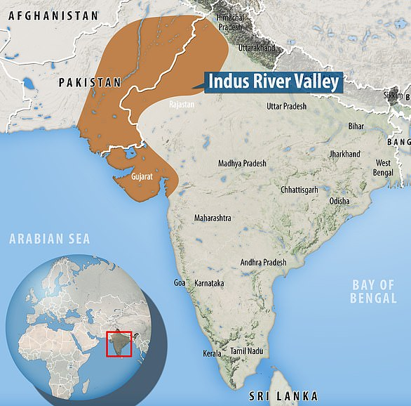
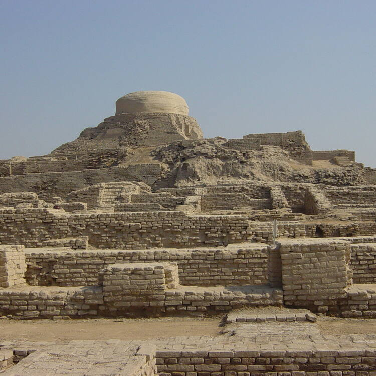

The Indus Valley Civilization was one of the earliest known human civilizations, spanning from roughly 3300 BCE to 1300 BCE, covering an area of land including parts of modern day Pakistan, India, and Afghanistan.
Due to the introduction of agriculture within the Indus valley in roughly 6500 BCE, several settlements were able to be slowly established, reaching a peak between one and five million inhabitants in the valley.
| Modern-day Pakistan | Modern-day India |
|---|---|
| Harappa | Dholavira |
| Ganeriwala | Kalibangan |
| Mohenjo-daro | Rakhigarhi |